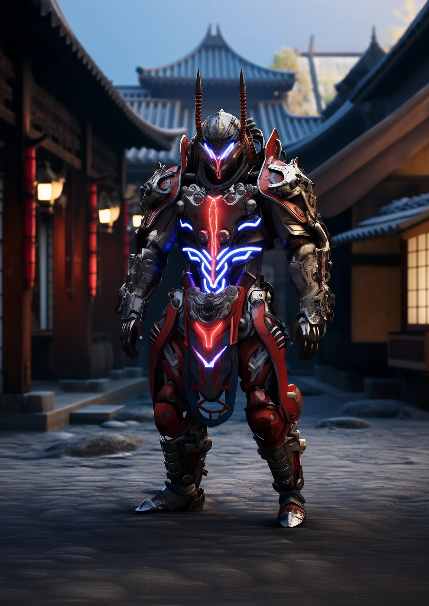
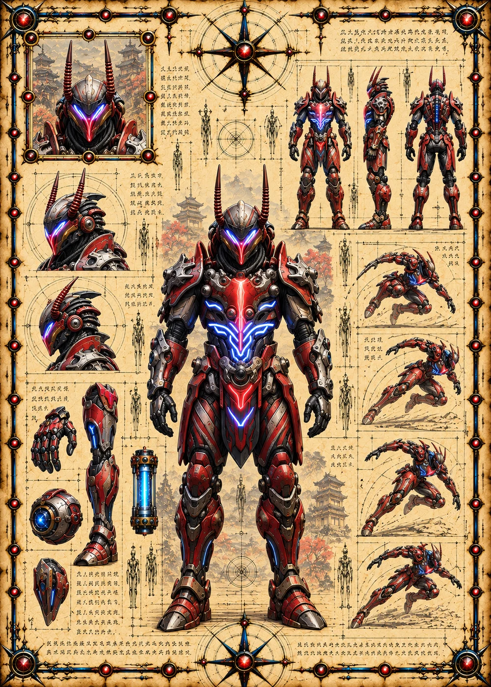

©
©
GENEZYS ARCHIVE · Earth 1 · Legionnaire
Arelian
Tone Tuner

Archive record
Arelian listens to crystal the way musicians listen to strings. The Resonant Pop shatters an enemy's balance with one sonic burst and leaves an echo that keeps hurting. Every Warden's bond-stone hums at its own pitch, and Arelian can tell them all apart.
Combat signature
Resonant Pop
220 Cosmara
140 Animus
160 Vitalis
Shatters equilibrium with sonic burst: Deals 40 pierce damage and another 50 damage for next 2 rounds.
Genezys 05:03 ™&©2026LEGIONS
